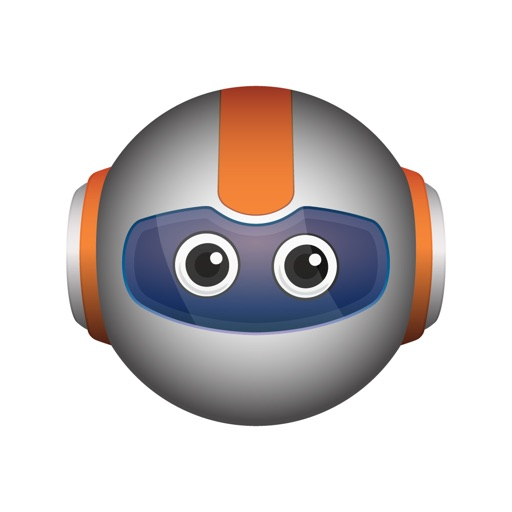
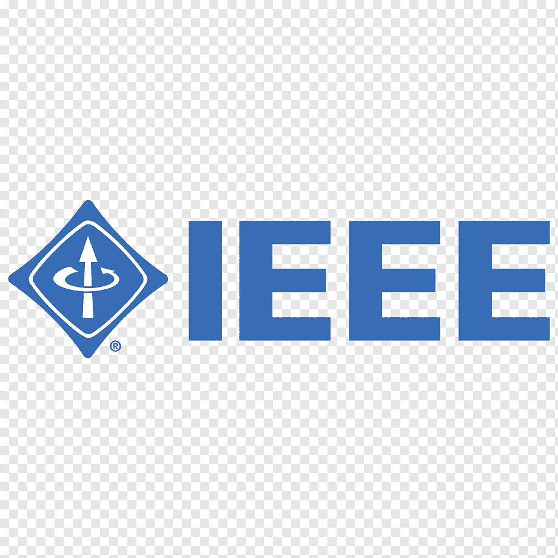
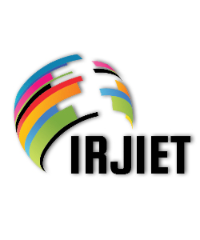
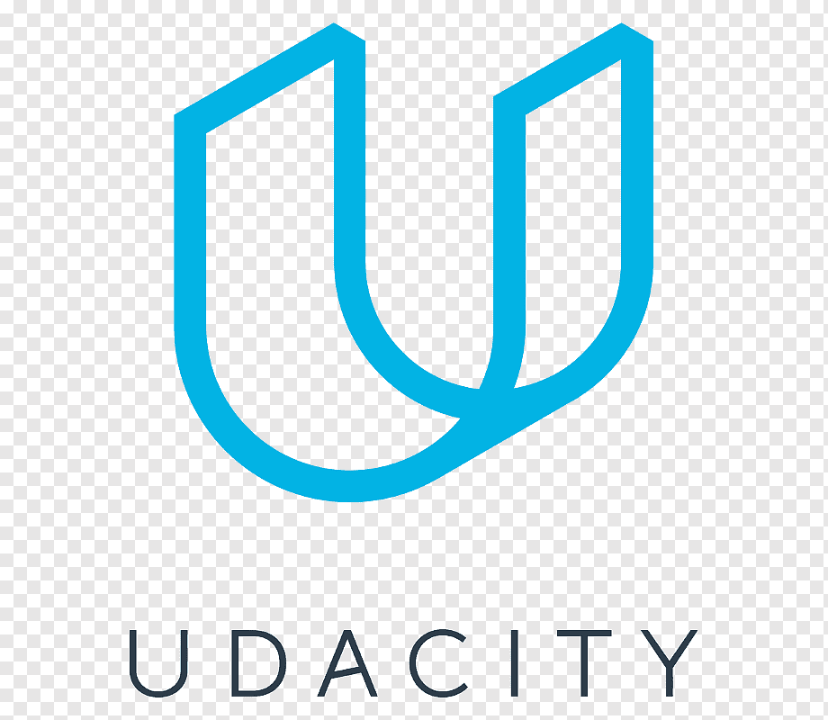
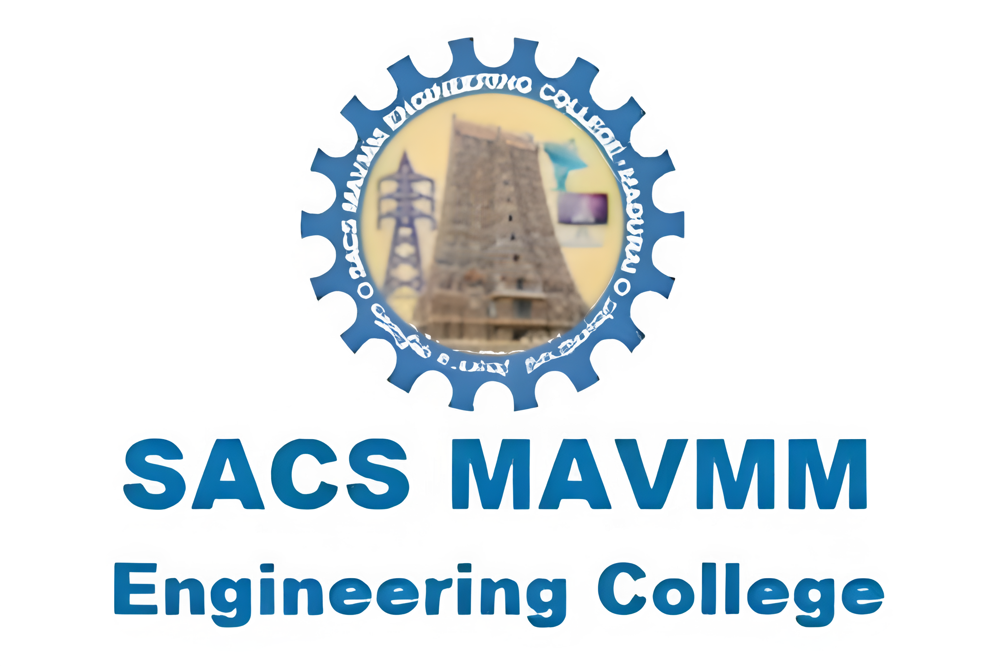

Applied AI Engineer building production AI systems across Computer Vision, Spatial AI, and Retrieval Systems. Kaggle Competition Expert & Notebook Master, creator of 7 open-source PyPI libraries in the Ant Intelligence Ecosystem.
Applied AI Engineer building production-ready AI systems across Computer Vision, Spatial AI, and Retrieval Systems.
Designed and deployed AI solutions across healthcare, manufacturing, and finance. Currently focused on spatial intelligence and edge-first AI tooling.
Creator of the Ant Intelligence Ecosystem: 7 open-source Python libraries on PyPI covering evaluation, vision, audio, documents, time-series, adaptive RAG, and privacy auditing.
Kaggle Competition Expert & Notebook Master with 100+ competitions. Published in IEEE and arXiv.
Seven pluggable Python libraries unified by Ant Studio: composable pipelines, zero mandatory dependencies, works with any LLM provider.
📚 Documentation →
Evaluate and benchmark any LLM system. 78 metrics, 13 modules. Works offline or with any LLM provider.
Self-improving retrieval framework that learns from every query. Persistent memory, agentic retrieval, and MCP tool integration.
Search images and videos with natural language. Index visual content, query with plain text.
Search any audio with natural language. Transcribe, embed, and retrieve from meetings, calls, or podcasts.
Document intelligence that reads, extracts, and retrieves. Works with any document format, structured or unstructured data.
Time-series forecasting, anomaly detection, and signal analysis. 33 built-in models. Five lines to forecast.


IEEE · Feb 2024
IRJIET · March 2020

Always open to new opportunities, collaborations, and meaningful conversations about AI. Reach out directly or drop a message below — I usually reply within a day.